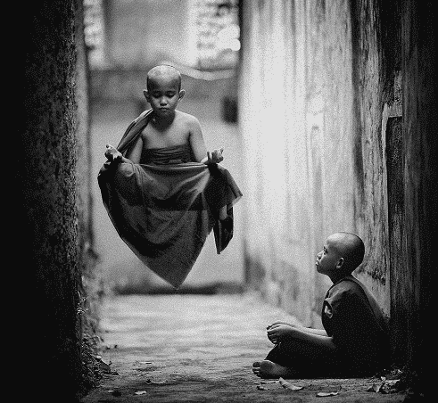

If you’ve stared at a blank document and the words weren’t flowing, you’re not alone. Mark Twain sometimes had that experience in front of a typewriter, and Geoffrey Chaucer with an empty parchment and a quill pen. So then, what do you do if you’re blocked while up against a deadline, trying to get that business presentation done, finish the doctoral dissertation about vegetable symbolism in Hamlet, or complete your Jezebel article about how chewing gum contributes to toxic masculinity?
The creative process
It’s important to understand a writing project’s phases:
Planning is where you develop a general outline. This may be the essentials of a plot, or the points you’re trying to make in a monograph. This phase also includes research. If it’s a story, you might also detail the characters, to sketch out their personality and history enough that they’ll come to life. It doesn’t need to be too extensive, though ideally, you’ll have enough information about them that you can imagine a conversation with them or know how they’d react to any given situation.
Editing is pretty self-explanatory. This involves checking the spelling and grammar; no word processor will catch every mistake. Also, that’s where you sharpen up the style, and fix any problems in logic and consistency. Editing is vital to perfecting the quality, but make it whatever you’re doing when you’re not in writing mode.
Writing is the most important part. This is what produces all those words. When a project starts, you have nothing written down, and this is where many people get blocked. Although planning is the first on the list, most likely you already have at least a basic idea of where you’re going with it. Also, it’s sometimes difficult to get into writing mode, which is another reason to prioritize it.
Creative flow

Fortunately it’s not this tricky, usually!
Most writing happens during creative flow. It’s not exactly a trance, but it’s somewhat a different state of consciousness. This takes place in any artistic endeavor. If you’re out on the town and vibing effortlessly, that’s essentially similar. Being blocked in that scenario is the all-too-common experience of wanting to be social or chat up someone but having no idea what to say. Creative flow is necessary even when writing software.
If you’ve got the inspiration fully in gear, then you’re putting ideas down as fast as you can type. I’ve had the experience where stories basically write themselves. Not being able to enter creative flow causes the dreaded writer’s block. Until your first draft is done, or nearly so, then always try to catch the inspiration where ideas coalesce into words almost magically.
What planning and editing have in common is that they’re fairly analytical and detail-oriented. Thus, for the most part, the left hemisphere of the brain is engaged. On the other hand, the writing phase is mainly a right-brained activity. That’s where the artistic functions of the mind happen. So this is a very different process from planning and especially editing.
Note well, it’s pretty hard to get both hemispheres of the brain fully engaged at the same time, unless you’re good enough at meditation to levitate or whatevs.
Get in the right mindset

You can stare at this trippendicular fractal until inspiration arrives.
You must shift gears mentally, so to speak, to enter creative flow for the writing phase. Again, this is what gets your first draft finished, so catch the inspiration whenever possible. This is the trickiest part. This doesn’t just happen on command, any more than you go to sleep at will.
The right mood music may help, something suitable for the task. (With my latest novel, listening to Espirpe Imperial, Division 250, and Celtica really put me in the right state of mind.) If the lyrics get distracting, find something instrumental or in a language you don’t understand well. The ancients invoked the Muses to get into the spirit of things; do that if it works for you.
When you’re in creative flow, it’s easy to get distracted. Set aside some time when you won’t be disturbed. Grab some munchies and your favorite beverage, so you won’t have to get up for it. Set aside extraneous worries or other thoughts, and focus on the project at hand. If necessary, tell anyone else nearby to let you finish your task. If they won’t leave you alone, persuade them to enroll in STFU.
Since most writing these days is done on computers, it’s difficult to avoid distractions. Therefore, you’ll have to discipline yourself. Keep off of the email, video games, stock charts, tentacle porn, and all that when you’ve set aside some time. Turn the ringer off on the phone, or put it in another room if you’re still tempted to check it.
Editing must be done with a clear head, or else you’ll make mistakes. On the other hand, creative flow can happen even when you’re tired. Some writers even prefer to get drunk. (Back in the day, many favored absinthe, though it’s hard to get it quite like they used to make it. The scare stories about it were fairly overblown.) All that is up to your personal discretion. However, it’s advisable not to overdo the bug juice or rely on it as a crutch.
Igniting the spark
So you’re staring at a blank manuscript, and the words aren’t coming off of your fingertips—what then? Rack your brains and write down a sentence or two. Surely you can think of something—anything. Then see if you can get something else down. Take it as far as it will go. This is what shifts the gears. Soon you’ll get a paragraph or two. With luck, words will start flying off your fingers. Run with it as fast as possible!
Note that it doesn’t have to be in any particular order. Speed is what counts. Don’t dwell too much on fixing mistakes, or that will knock you back into edit mode. If the ideas start coming faster than you can get them into sentences, jot down the ideas elsewhere so you can pick up the thread later.
It’s not possible to knock out a novel in one sitting. (With my latest, fourteen chapters and 88K words certainly didn’t happen overnight!) So eventually you’ll have to stop and pick it up later. Reigniting the spark is a little easier when you have something in writing already. You can begin in editing mode, putting things in order, making transitions from one block of finished paragraphs to the next, and otherwise polishing up what you already wrote. When you start getting thoughts on where else you want to go with it, then kick into writing mode and start creating new paragraphs.
Sometimes you’ll have to step back to planning mode, if you need to work out something with logic or direction. That’s fine, but as soon as you come up with some ideas you can write down, then hit it. If necessary, you can go to another writing project, returning to the first later. If all else fails, then start doing some boring, repetitive task that you’ve been putting off for a while. Mull over your ideas while you paint the living room or whatever.
Most importantly, have fun with it!
Don’t miss Beau’s book catalog. Good stuff!
Read More: 60 Myths On Memory, Learning, Sleep, And Creativity